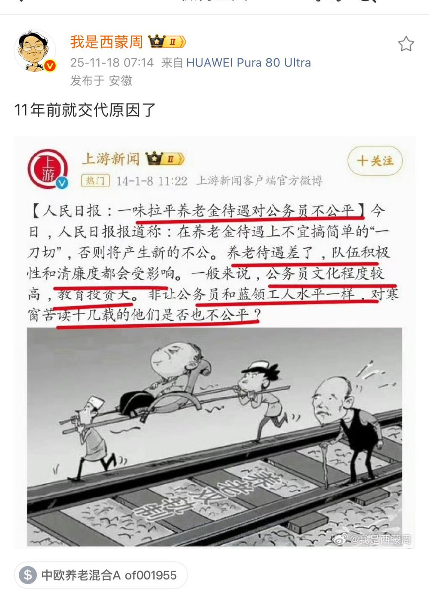

拱北靠北
@psyofsouthwest
@wangjupaian 制度性腐败

王局拍案
@wangjupaian
【博主翻旧账：公务员养老金为何不能拉平？官方早有答案】
博主“我是西蒙周”指出，关于养老金“双轨制”，官方其实在11年前就给过解释。
当时《人民日报》写道：
“一味拉平养老金待遇，对公务员不公平。”
人日文章还强调——
如果养老金待遇下降，公务员队伍的积极性和清廉度都会受到影响。 https://t.co/JscRzyoEZO